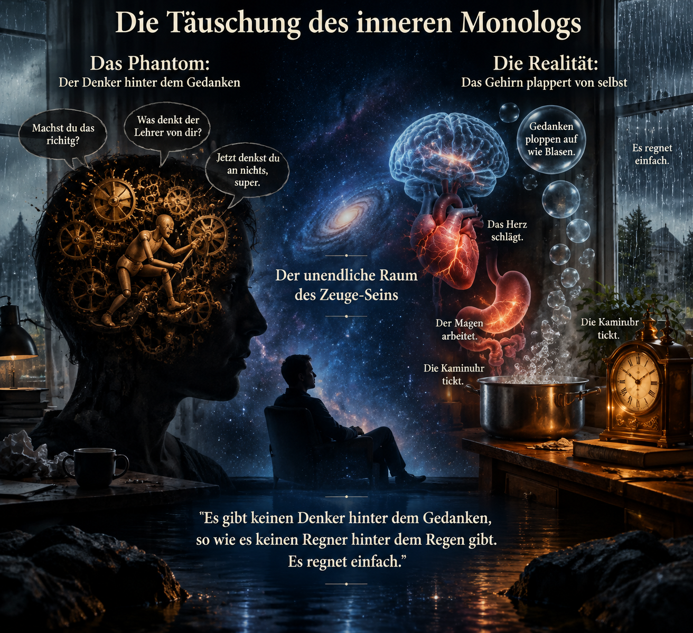
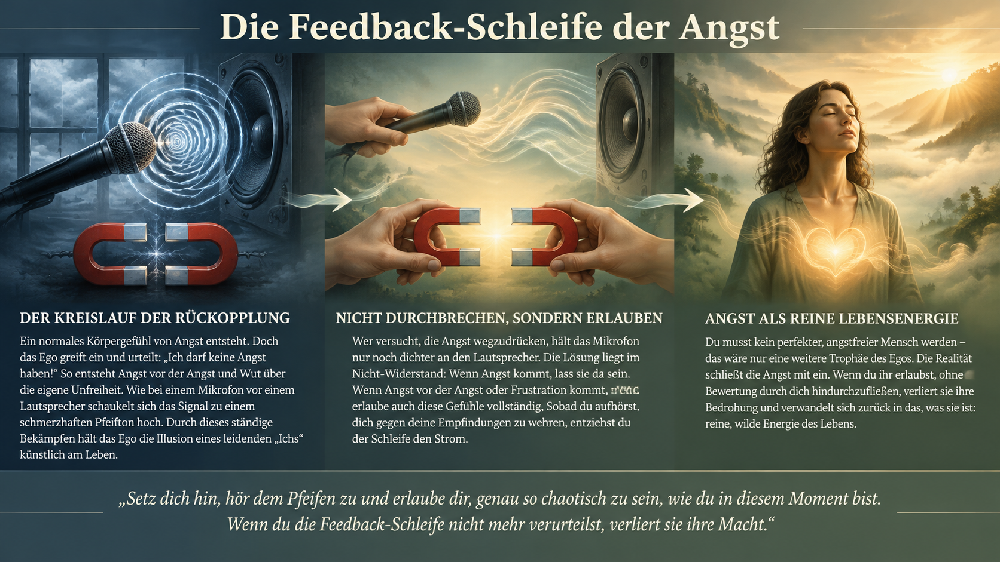
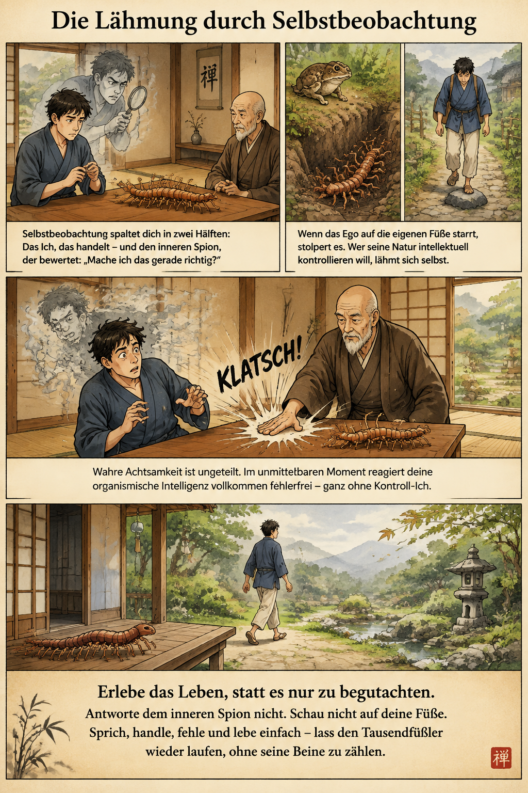

Block 1: Die Demontage der Landkarte
Stunden 11–20: Das Missverständnis der Kontrolle
Stunde 11: Das Netz der sozialen Institutionen
1. Die Illusion der Maske (Persona): Der Begriff
„Person“ leitet sich historisch von der Maske des antiken
Schauspielers ab. Die Gesellschaft verpasst uns eine Maske aus Namen,
Pflichten und Nationalität – der Fehler liegt darin, sich selbst mit
dieser Rolle zu verwechseln.
2. Soziale Institutionen als Spielkonventionen:
Steuern, Gesetze, Geld und Staatsgrenzen sind nützliche Fiktionen, die
nur im kollektiven Geist existieren, ähnlich wie die Linien auf einem
Fußballfeld. Das Leben wird zum Albtraum, wenn wir vergessen, dass es
ein Spiel ist.
3. Die Akte versus das lebendige Wesen: Der
juristische „Bürger“ ist ein papiernes Konstrukt aus einer
Computerakte, das weder atmet noch fühlt. Wer sich damit
identifiziert, erlaubt einem System, sein inneres Wesen zu
kontrollieren und sich als Rädchen in einer Maschine zu fühlen.
4. Die Leichtigkeit des Schauspielers: Ein weiser
Mensch flieht nicht vor der Gesellschaft, sondern spielt seine Rolle
mit der Leichtigkeit eines Meisters. Er zahlt den Eintrittspreis des
Systems (Steuern, Pässe), bleibt im Inneren jedoch der freie,
unberührte Ozean.
Stunde 12:
Die Täuschung des inneren Monologs

1. Die Illusion des Denkers: Wir glauben
fälschlicherweise, das bewusste Subjekt zu sein, das unsere Gedanken
aktiv steuert. In Wahrheit taucht das „Ich“ erst nachträglich als
sprachlicher Trick auf – es gibt keinen Denker hinter dem Gedanken, so
wie es keinen „Regner“ hinter dem Regen gibt.
2. Gedanken als autonome Organfunktion: Der innere
Monolog ist kein Beweis für das Ego, sondern ein automatischer Prozess
unseres Nervensystems. Das Gehirn produziert unaufhörlich Gedanken,
genau so wie der Magen Magensäure produziert oder das Herz Blut pumpt,
ohne dass wir es bewusst einschalten.
3. Die Gleichstellung mit Naturereignissen: Das
Entstehen eines inneren Satzes unterscheidet sich nicht vom Ticken
einer mechanischen Uhr oder dem Prasseln des Regens an der
Fensterscheibe. Gedanken sind bloße Naturereignisse im Bewusstsein,
die wir erst wahrnehmen, nachdem sie bereits entstanden sind.
4. Das Erwachen zum passiven Zeuge-Sein: Freiheit
entsteht nicht dadurch, dass wir das „innere Radio“ gewaltsam
ausschalten, sondern indem wir dessen Wichtigkeit durchschauen. Wir
sind nicht die plappernde Stimme im Kopf, sondern der unendliche,
stille Raum, in dem diese Stimme stattfindet.
Stunde 13
Das Bügeleisen auf dem schlammigen Wasser
1. Das Paradoxon der Willenskraft: Der Versuch, den
unruhigen Geist durch Disziplin, Konzentration oder Unterdrückung zur
Ruhe zu zwingen, erzeugt lediglich eine neue Ebene der Anspannung.
Jede bewusste Aktion des Egos, die Unruhe zu bekämpfen, ist selbst
eine neue Welle des Aufruhrs.
2. Das Gleichnis vom Bügeleisen: Der Versuch,
Gedanken mit Gedanken auszuschalten, ist so, als wolle man Wellen auf
schlammigem Wasser mit einem schweren Bügeleisen glattbügeln. Jedes
Aufpressen wirbelt den Schlamm am Boden nur noch heftiger auf und
macht das Wasser trüber.
3. Die Angst vor dem Kontrollverlust: Das Ego
operiert nach der Landkarte der Leistung und glaubt, im Innenraum des
Geistes genau so manipulieren und drücken zu müssen wie in der
Außenwelt. Es fürchtet das Nicht-Handeln, weil es dieses
fälschlicherweise mit dem Absturz ins Chaos gleichsetzt.
4. Die Methode des Nicht-Handelns (Wu Wei): Wahre
Ruhe entsteht nicht durch Machen, sondern durch vollkommenes
In-Ruhe-Lassen. Wenn man dem Wasser erlaubt, schlammig zu sein, sinken
die Partikel durch die natürliche Schwerkraft ganz von alleine zu
Boden, und das Bewusstsein wird von selbst klar.
Stunde 14
Das Messer, das sich selbst nicht schneiden kann
1. Die Unmöglichkeit der Selbstobjektivierung: Das
Bewusstsein kann sich selbst nicht als Objekt greifen oder betrachten.
Die Suche nach dem inneren Kern scheitert zwangsläufig, weil das
Werkzeug der Suche das Gesuchte selbst ist – das Auge kann sich selbst
nicht sehen, das Messer kann sich selbst nicht schneiden.
2. Das Ego als sprachliches Phantom: Die Struktur
unserer Sprache spaltet die Realität künstlich in ein Subjekt („Ich“)
und ein Objekt („die Welt“). In der nackten Realität des Territoriums
existiert dieser Graben nicht; es gibt keinen separaten Beobachter,
sondern nur den ungeteilten Prozess des Wahrnehmens.
3. Die Absurdität der inneren Jagd: Der quälende
Versuch, das eigene Ich im Kopf zu finden und zu analysieren, gleicht
einer Welle, die versucht, den Ozean zu fangen, oder einer Hand, die
nach der eigenen Hand greift. Das Ego kann sich nicht selbst erkennen,
weil es kein echtes Lebewesen, sondern eine nachträgliche Idee ist.
4. Die Freiheit im nackten Gewahrsein: Wenn die
vergebliche Jagd auf das eigene Zentrum kollabiert, bleibt die reine,
unmittelbare Erfahrung der Realität übrig. Ohne den Zwang, das Erlebte
einer Definition oder einem Besitzer zuzuordnen, wird der Geist weit
und verschmilzt mit dem Moment.
Stunde 15
Die Feedback-Schleife der Angst

1. Die psychologische Feedback-Schleife: Wenn Gefühle
wie Angst auftauchen, neigt das Ego dazu, über diesen Zustand zu
reflektieren und sich dagegen zu wehren. Dadurch entsteht eine endlose
Schleife – die Angst vor der Angst –, die das ursprüngliche Gefühl wie
ein Mikrofon am Lautsprecher zu einem ohrenbetäubenden Pfeifton
verstärkt.
2. Die Überlebensstrategie des Egos: Das Ego nutzt
diese permanente psychische Alarmbereitschaft, um eine falsche
Wichtigkeit zu simulieren. Indem es ein einfaches, körperliches Gefühl
in ein riesiges, kompliziertes Problem verwandelt, hält es die
Illusion aufrecht, dass da ein isoliertes „Ich“ existiert, das leiden
und kämpfen muss.
3. Das Ende des inneren Widerstands: Die Schleife
lässt sich nicht durch aktive Bekämpfung oder Unterdrückung
durchbrechen, da jeder Eingriff sie nur weiter füttert. Das Paradoxon
löst sich erst auf, wenn der Widerstand gegen die eigenen Emotionen
aufgegeben wird und man sich erlaubt, genau so unruhig zu sein, wie
man im Moment ist.
4. Integration in das Territorium: Das Territorium
der Realität schließt die Angst mit ein – sie ist eine ganz normale,
biochemische Energie des Organismus. Wenn man aufhört, eine Geschichte
über sie zu erzählen oder ein fehlerfreier Schüler sein zu wollen,
verliert die Angst ihre Bedrohlichkeit und fließt einfach hindurch.
Stunde 16
Der spirituelle Materialismus
1. Die Falle des spirituellen Materialismus: Wenn das
Ego erkennt, dass seine weltlichen Spielzeuge wie Geld oder Status als
Illusionen entlarvt wurden, zieht es lediglich in ein neues, heiliges
Gewand um. Die Gier nach Erfolg wird durch die subtilere Gier nach
Erleuchtung, Ruhe und spiritueller Weiterentwicklung ersetzt.
2. Meditation als Optimierungswahn: Der Versuch, die
Zen-Praxis als Werkzeug zur Selbstoptimierung zu missbrauchen, füttert
das Ego, anstatt es zu demontieren. Man sitzt nicht mehr im Hier und
Jetzt, sondern schielt heimlich auf eine spirituelle Trophäe in der
Zukunft, wodurch man sich erneut von der Realität trennt.
3. Die Arroganz der heiligen Maske: Der spirituelle
Ehrgeiz erschafft die arroganteste aller Masken: das Gefühl, ein
„besserer“, „achtsamerer“ oder „reinerer“ Mensch zu sein als die
unspirituelle Umwelt. Das Ego nutzt den vermeintlichen Fortschritt auf
dem Kissen, um sich über das gewöhnliche Leben zu erheben.
4. Die heilsame Nutzkosigkeit des Zen: Wahre Praxis
hat kein Ziel, keinen Sinn und ist vollkommen nutzlos. Eine Katze
sitzt nicht da, um eine bessere Katze zu werden, und der Wind weht
nicht für den Erfolg – Zen ist das zweckfreie Feiern des Augenblicks,
der bereits vollkommen ist.
Stunde 17
Die Lähmung durch Selbstbeobachtung

1. Die Spaltung durch Selbstüberwachung: Der Versuch
des Egos, sich selbst permanent beim Handeln zuzusehen („Mache ich das
gerade richtig?“), spaltet das Bewusstsein künstlich in zwei Hälften.
Es entsteht ein innerer Spion, der dem handelnden Ich ununterbrochen
über die Schulter starrt und jede Spontaneität im Keim erstickt.
2. Das Gleichnis vom Tausendfüßler: Wer beim Gehen
ständig starr auf seine eigenen Füße schaut und über den
Bewegungsablauf nachdenkt, stolpert und bricht gelähmt zusammen. Die
paranoide Selbstbeobachtung blockiert das natürliche Funktionieren des
Organismus und schneidet uns von der nackten Realität ab.
3. Achtsamkeit versus Selbstbeobachtung: Wahre
Achtsamkeit ist ungeteilt und geht komplett in der Erfahrung auf (da
ist nur das Gehen, der Wind, das Sprechen). Die Selbstbeobachtung
hingegen ist eine Kontrollstrategie des Egos, die aus der Angst vor
Fehlern geboren wird – man erlebt das Leben nicht mehr, man
begutachtest es nur noch.
4. Das Vertrauen in die organismische Intelligenz:
Unser Nervensystem besitzt eine Jahrmillionen alte, instinktive
Intelligenz, die perfekt, unmittelbar und fehlerfrei reagiert, wenn
das rationale Ego aufhört, sie zu zensieren. Freiheit beginnt dort, wo
wir dem Fluss unseres eigenen Seins wieder vertrauen und einfach
handeln.
Stunde 18
Das künstliche Korsett der Tugend
1. Die Inszenierung der fehlerfreien Form: Der
Schüler neigt dazu, sich in ein künstliches Korsett aus Disziplin,
perfekter Körperhaltung und erzwungener Ruhe zu zwängen. Diese
vermeintliche Meisterschaft ist jedoch oft nur eine neue, extrem
subtile Maskerade des Egos, um Anerkennung zu erlangen und die
Kontrolle zu behalten.
2. Die Totenstarre aus Angst vor dem Chaos: Eine
einstudierte, künstliche Stille ist keine echte spirituelle Befreiung,
sondern eine mentale Erstarrung. Sie wird aus der nackten Angst vor
der eigenen Unvollkommenheit, den weltlichen Emotionen und der
Unberechenbarkeit des Lebens geboren.
3. Die Heuchelei der bewussten Tugend: Eine Tugend,
die wie ein Abzeichen vor sich hergetragen wird, trennt den Menschen
von der Realität. Wahre Spiritualität ist nicht steril oder makellos –
wer sich weigert, jemals überrascht, traurig oder verwirrt zu sein,
baut sich ein neues mentales Gefängnis und blockiert seine
Lebensenergie.
4. Das Zen der gewöhnlichen Menschlichkeit: Ein
befreiter Mensch ist kein unnahbarer Übermensch, sondern ein ganz
gewöhnlicher Mensch, der nichts mehr zu verbergen hat und mit dem
Fluss des Lebens geht. Wenn er überrascht wird, zuckt er zusammen;
wenn ihm das Leben Wasser ins Gesicht wirft, wird er einfach nass.
Stunde 19
Die Erschöpfung des spirituellen Willens
1. Die Sackgasse des spirituellen Willens: Nach
unzähligen Versuchen, den Geist zu manipulieren, zu beruhigen oder in
eine spirituelle Form zu gießen, bricht das System des Schülers
zusammen. Jeder bewusste Versuch, das Ego loszulassen, wird als neue
Methode entlarvt und führt in eine totale mentale Sackgasse.
2. Die Bankrotterklärung des Egos: Das Eingeständnis
der absoluten Ohnmacht und Hilflosigkeit ist kein spirituelles
Versagen, sondern ein notwendiger Meilenstein. Das Ego begreift in
diesem Moment des Zusammenbruchs, dass es sich nicht selbst besiegen
kann, und verliert all seine Werkzeuge.
3. Das Gleichnis vom Ertrinkenden: Solange ein Mensch
im Wasser in Panik wild um sich schlägt, drückt er sich selbst unter
die Oberfläche. Erst wenn seine Muskeln völlig erschöpft versagen und
er das verzweifelte Machen aufgibt, beginnt das Wasser ihn durch seine
natürliche Tragkraft von ganz alleine zu halten.
4. Die heilige Nüchternheit der Kapitulation: Die
absolute Erschöpfung zwingt das Ego dazu, endgültig die Waffen zu
strecken. Ohne Stolz, ohne Landkarte und ohne den Zwang, etwas
beweisen zu müssen, bleibt der Schüler nackt und empfänglich im Hier
und Jetzt zurück – der Boden für den endgültigen Durchbruch ist
bereitet.
Stunde 20
Das Finale der Kontrolle (Der Hund jagt seinen Schwanz)
1. Die Demontage des inneren Spaltpilzes: Die
fundamentale Absurdität des Kontrollwahns wird endgültig durchschaut.
Der Schüler erkennt, dass das „Ich“, das vorgibt, den Geist beruhigen,
kontrollieren oder erleuchten zu wollen, exakt dasselbe „Ich“ ist, das
die Unruhe überhaupt erst erzeugt.
2. Das Gleichnis vom schwanzjagenden Hund: Der
Versuch des Egos, sich selbst zu kontrollieren oder loszulassen, ist
wie ein Hund, der verbissen versucht, seinen eigenen Schwanz zu
fangen. Der Jäger und die Beute, der Kontrolleur und das Kontrollierte
sind in Wirklichkeit ein und dasselbe Phänomen.
3. Der Kollaps des intellektuellen Stillstands: Wenn
das Ego die absolute Sinnlosigkeit seiner eigenen Kreisbewegungen
erkennt, kommt der Verstand an ein unüberwindbares Ende. In diesem
Moment des völligen intellektuellen Stillstands bricht das gesamte
Konstrukt der künstlichen Trennung in sich zusammen.
4. Das Tor zum mühelosen Fließen (Wu Wei): Mit dem
Zusammenbruch des Kontrollwahns endet die mühsame Sabotage der eigenen
Natur. Das Ego streckt endgültig die Waffen, wodurch die Illusion der
Hautkapsel schwindet und der perfekte Übergang zum spontanen,
natürlichen Fließen mit dem Strom bereitet ist.